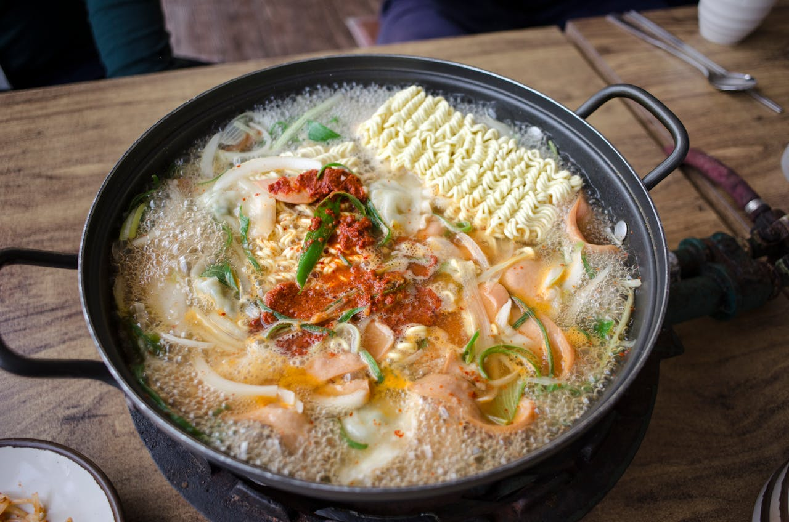

Food can be obtained in many different ways in Taniti.
Restaurant
On the island, you can find 10 restaurants.
Five of the restaurants serve mostly local fish and rice.
Three restaurants serve American-style meals if you want to eat American food on your visit.
Finally, two of the restaurants serve pan-Asian cuisine.
Grocery Stores
Taniti offers two supermarkets and two smaller grocery stores where anyone can buy food and goods.
If you are hungry at night and need a snack, Taniti also has a convenience store that is open 24 hours a day.
Frequently Asked Questions (FAQs)

Wondering about the drinking age on Taniti Island?
Look at the frequently asked questions page, where we answer that question and many more.
Credit to Stock Picture Creators:
- makafood. “Noodles with Vegetables in a Pot.” Pexels, https://www.pexels.com/photo/noodles-with-vegetables-in-a-pot-8915969/
- 1ynnneo. “Question, Question Mark, Speech Bubble.” Pixabay, https://pixabay.com/illustrations/question-question-mark-speech-bubble-1846784/